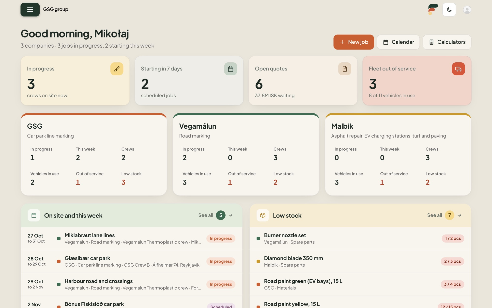
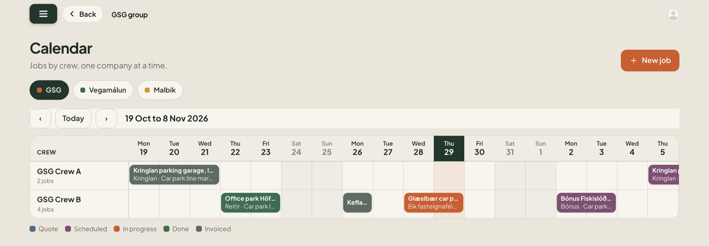
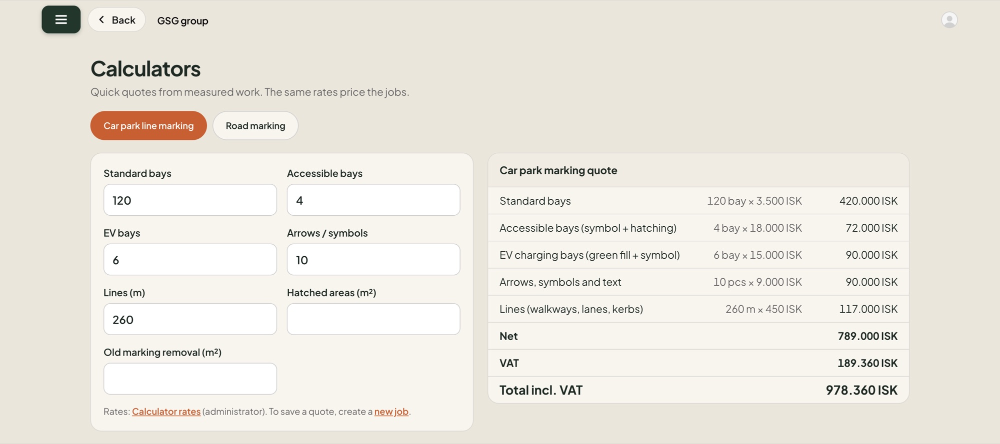
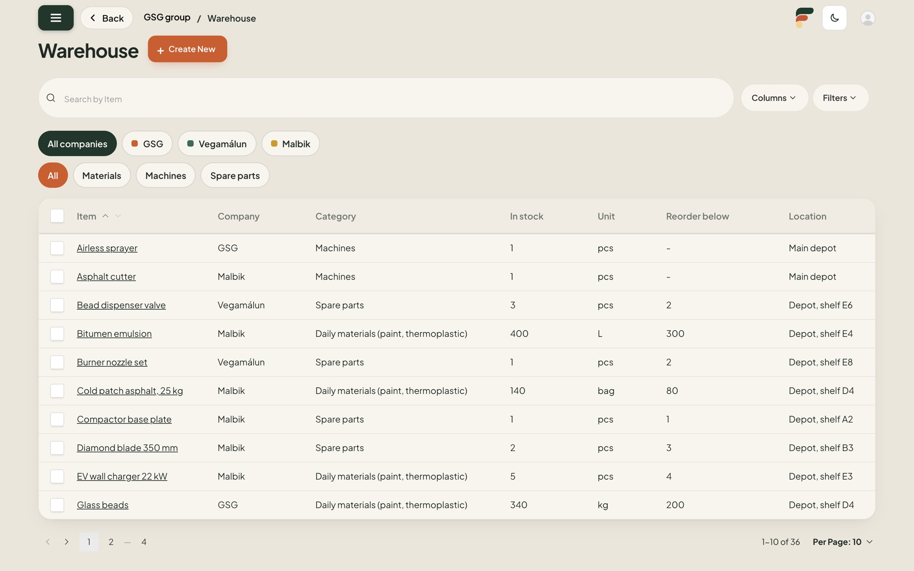
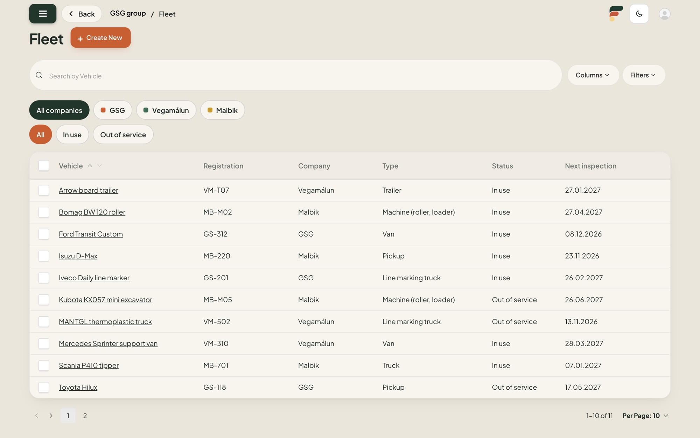
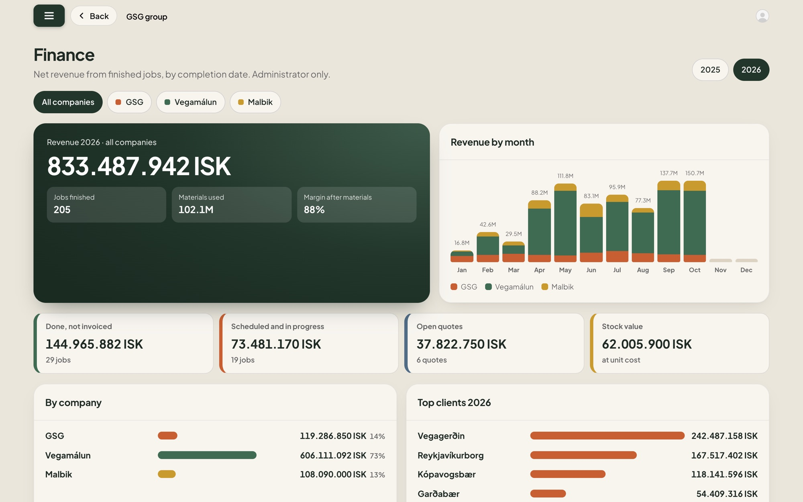
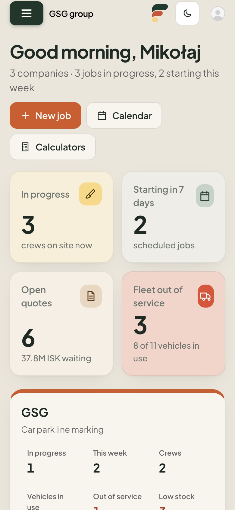

GSG, Vegamálun i Malbik prowadzone z jednego miejsca. Zlecenia, ekipy, kalendarz, magazyn, flota i pieniądze, dla każdej firmy osobno albo dla całej grupy, jednym kliknięciem.

Przeniesienie trzech firm z kartek, maili i wiadomości do Trello to był duży krok. Twój zespół już pracuje na zleceniach i statusach. Flavo Multi zostawia ten nawyk i wnosi go poziom wyżej.
Zlecenia były w zeszytach i skrzynkach. Wiedział tylko ten, kto zapisał.
Wszyscy widzą zlecenia na jednej tablicy. Karta mówi, co zrobić i kiedy.
System zna też ekipy, magazyn, flotę, ceny i pieniądze za każdym zleceniem.
Dzwoni telefon: na której budowie dziś jesteśmy? Brygadzista sprawdza tablicę i oddzwania.
Na miejscu kończy się masa termoplastyczna. Ktoś jedzie z powrotem do magazynu.
Klient chce wycenę parkingu. „Oddzwonię jutro.”
Robota skończona. Czy ktoś pamięta o fakturze?
Każda ekipa otwiera kalendarz w telefonie. Każdy wie, gdzie jedzie.
Farba spadła poniżej minimum w zeszłym tygodniu. Kokpit ostrzegł na czas.
Miejsca i metry do kalkulatora. Cena jest gotowa jeszcze w trakcie rozmowy.
Zlecenie oznaczone jako zrobione. Materiały schodzą z magazynu, zlecenie czeka w Finansach na fakturę.
Karta w Trello to dobra notatka. Ma tytuł, datę i listę zadań. Nie wie, ile miejsc ma parking, jaka farba stoi na półce ani który samochód jest w warsztacie.
Otwierasz karty, porównujesz daty, dopytujesz.
Kalendarz pokazuje każdą ekipę każdej firmy, dzień po dniu.
Liczone w czyjejś głowie albo w arkuszu.
Wpisujesz miejsca i metry. Cena wychodzi z tych samych stawek dla wszystkich.
Nie ma tego na tablicy. Ktoś sprawdza półkę.
Stan spada po zakończeniu zlecenia. Ostrzeżenie przychodzi, zanim się skończy.
Wiadomość, jeśli ktoś pamięta ją wysłać.
Status floty z powodem i datą powrotu.
Nie ma tego na tablicy. Ktoś musi to zebrać.
Finanse każdej firmy i bieżąca suma skończonych robót czekających na fakturę.
Koniec skakania między tablicą, arkuszem, telefonem i zeszytem. Wszystko poniżej jest w jednym panelu, dla trzech firm.
Każdy pracownik w ekipie, każda ekipa w swojej firmie.
Jest w demoZaplanowane prace każdej ekipy, dzień po dniu, w każdej firmie.
Jest w demoMiejsca, linie i przejścia pomalowane na każdej robocie, wycenione kalkulatorem.
Jest w demoFarba, kulki szklane, części i maszyny w każdym magazynie, z ostrzeżeniem o brakach.
Jest w demoPojazdy w użyciu albo wyłączone, z datą powrotu.
Jest w demoPrzychód każdej firmy w miesiącach i to, co czeka na fakturę.
Jest w demoKażdy pracownik wpisuje dzień w telefonie. Na koniec miesiąca plik Excel dla każdego.
Do zrobienia dla GSGStencile, farba i materiały zamawiane z panelu, ze statusem każdego zamówienia.
Do zrobienia dla GSG




Każde zlecenie idzie tą samą drogą w każdej firmie, więc każdy może je przejąć i widzi, na jakim jest etapie.
Cena z kalkulatora zapisana w zleceniu.
Daty, ekipa i pojazdy w kalendarzu.
Kokpit pokazuje, które ekipy są na budowie.
Materiały same schodzą z magazynu.
Numer i data faktury, liczone w Finansach.
Działa na telefonie, więc brygadzista sprawdzi plan na budowie. Dostęp ustawiasz każdej osobie.
Wszystko, także Finanse, stawki kalkulatorów i konta użytkowników.
Zlecenia, kalendarz, magazyn, flota i ekipy. Bez dostępu do Finansów.
Konto przypisane do jednej firmy widzi tylko jej dane.

Przejście z kartek na Trello pokazało, że Twoje ekipy umieją zmienić sposób pracy. Ten krok jest mniejszy.
GSG, Vegamálun albo Malbik. Reszta dołącza, gdy zadziała.
Zlecenia i statusy, jak karty na tablicy. Ekipy nie muszą uczyć się niczego nowego.
Wasze stawki, ekipy, pojazdy i magazyn, wpisane z naszą pomocą.
Bez nowych urządzeń. Panel otwiera się w przeglądarce.
Demo działa na przykładowych danych. Dopasowujemy je razem z Tobą: Wasze stawki, ekipy, pojazdy i sposób pracy.
Otwórz panel demo i przeklikaj trzy firmy.
Dopasujemy pola, kalkulatory i widoki do tego, jak pracują Twoje ekipy.
Pomagamy wpisać stawki, ekipy, flotę i magazyn, potem panel jest Wasz.
Wszystkie nazwy, liczby i kwoty na zrzutach to przykładowe dane demo.